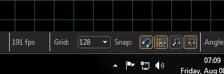
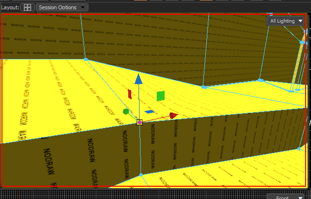
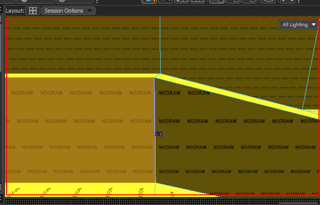

I’ve got some responses to your… lab record. 
I’ve only put so much time with experimenting so someone correct me if I get something incorrect.
I was worried about this too, especially since the issue is so apparent in the Leadwerks editor. But after a few hours, it only happened a few times. What they did right, here was making it so that it doesn’t open on a short click, rather if you don’t move the view at all. It could stand to be fixed, but isn’t as big a problem as I thought it would be.
That was in the previous Hammer, too, you had to toggle it by pressing X.
As I pointed out to ya (but I’ll restate here for anyone who happens to be confused), no they’re not. There’s a tiny button above the 3D viewport that lets you change layouts, including the classic quad view.
Clipping is a bit different now. It’s not so much that it removes faces, but rather it doesn’t create new ones. You’re slicing faces and edges of meshes now, not totally solid brushes.
This is actually basically a UV mapping tool, I think. I’ll make a point to stay away from it personally, I don’t need that Hell in Hammer, too.
There is both 2D views, and a grid size indicator. Not really any different from previous iteration of Hammer.

You can close out of many of the menu things and clear up space by going to View > Toolbars.
You can close that out for more space. You can bring up that same properties box with ALT+ENTER, like always.
Gotta be in Translate mode!

I think it might be a DOTA thing, or maybe you had a huge texture. Here’s nodraw at .25.

It’s a bit different than working with brushes, but not too much so. I’d read the VDCW documentation. It’s really easy after a few minutes of playing around.
All in all, I’m really happy about this editor. I’ve got some minor gripes, though: When a mesh is selected and you’re in vert, edge or face edit mode, you can see every edge in it at all times, they don’t get obscured, the gizmos often get in the way when selecting, the 3D viewport seem very bright, and lastly, having to constantly reposition the pivot point it’s a hassle.


{kind=link}